- Чжун Юань цигун
- Имидж медицина
Чжун Юань цигун
Цигун — древнее китайское искусство саморегуляции, оздоровления и гармонии. По некоторым источникам эта система насчитывает более 7 тысяч лет. В цигун существует много направлений и школ: даосское, конфуцианское, буддийское, боевых искусств, медицинское и пр.
Понятие «цигун» состоит из двух иероглифов — «ци» и «гун». «Ци» — это энергия жизни, которая наполняет тело, перемещается в нем, принимает различные формы. «Гун» — это работа, умение управлять ци. Соответственно, «цигун» — это искусство использования энергии, владея которым можно лечить болезнь, стать сильным и неуязвимым в бою, замедлить процесс старения, продлить жизнь, развить творческие способности, укрепить дух и глубже познать мир.
Регулярная практика позволяет увеличить жизненную энергию, повысить иммунитет, продлить активную жизнь и молодость, проявить скрытые резервы организма, приобрести особые способности и устойчивость к стрессовым ситуациям.
Чжун Юань цигун, древнейшая из известных систем цигун, появилась более семи тысячелетий назад, еще во времена отдельных племен на территории Китая.
«Чжун Юань» — это название равнины в Китае, на территории которой зародился стиль Чжун Юань цигун. «Чжун» означает центр, середину, а «юань» — источник всего сущего.
Тысячи лет система относилась к «тайным знаниям» и была открыта миру лишь в наши дни, в семидесятые годы. В настоящее время она получила широкое распространение. Так во многих странах действуют оздоровительные и лечебные центры Чжун Юань цигун; выпускаются книги и видеоматериалы; проводятся лекции в медицинских учреждениях и университетских аудиториях; проходят ежегодные интенсивные тренинги, в том числе и при Международном учебном центре ушу, гунфу и цигун в Шаолине (Китай).
Чжун Юань цигун относится к цигун высших уровней и является наиболее перспективным направлением развития человека. Это целостная система знаний и методов практики. Она включает в себя упражнения, медитации, различные способы дыхания, направленные на развитие человека, его оздоровление, лечение, расширение сознания, понимание своих жизненных задач и своей миссии.
В школе Чжун Юань цигун новичок проходит путь от освоения отдельных элементов до философского понимания целостной картины мира, в которую включен Человек, его прошлое и будущее, его глубинная тысячелетняя связь с природой. Это универсальная и уникальная по широте охвата оздоровительная и развивающая система, опирающаяся на естественные возможности человеческого организма. Чжун Юань цигун является наукой о Жизни в самом широком смысле.
Мастер Сюи Минтан — продолжатель линии передачи школы Чжун Юань цигун. Официальной обязанностью семьи Сюи в течение многих поколений была духовная защита монастыря Шаолинь. Родственники Сюи Минтана были уважаемыми мастерами искусства цигун. До сих пор в монастыре Шаолинь находится храм его предка.
С детства Сюи Минтан учился у своего отца — искусству цигун, китайской медицине и воинскому искусству. Позднее, проходил обучение цигун у других Учителей. В настоящее время Сюи Минтан — известный и авторитетный Гранд-Мастер цигун, основатель и директор медицинского научно-исследовательского института «Кундавелл» в Пекине и Сиэтле, Президент Международной асоциации ЧЮЦ, вице-президент всемирного академического общества медицинского цигун, основатель международного благотворительного фонда «Минтан». Он продолжает изучать возможности Чжун Юань цигун. С 1991 года он проводит обучение по этой системе по всему миру.
В настоящее время в системе Чжун Юань Цигун обучение проводится на семинарах по 1, 2, 3 и 4 ступеням. На каждой ступени Чжун Юань Цигун мы учим подготовительные, основные и вспомогательные упражнения. Семинары проходят 4-5 дней по 3 часа в день в вечернее или удобное для группы время. Обучение проводится в групповом или индивидуальном формате.
Обучение на первой и второй ступени дает человеку комплекс методов и способов оздоровления, улучшения эмоционального состояния, стимулирования мыслительных процессов и креативности. Практикующий упражнения по этим ступеням учится находиться в гармонии с окружающей средой, находить и использовать скрытые возможности организма.
На 1-ой ступени Чжун Юань цигун основное внимание уделяется упражнениям, способствующим достижению состояния расслабления, улучшению качества нашей энергии, открытию заблокированных участков энергетических каналов тела, восстановлению правильной циркуляции ци и крови, уделяется внимание работе с нижним даньтянем. Практика первой ступени позволяет нам привести в порядок здоровье, повысить иммунитет, активизировать «спящие» участки мозга.
Практика упражнений 2-ой ступени, способствуют более быстрому вхождению в состояние глубокого расслабления и тишины. Здесь особое внимание уделяется работе со средним даньтянем (сердечный центр), для преобразования энергии в духовную силу, которая позволяет влиять на жизненные процессы, необходимые для здоровья, взаимодействия в социуме и достижения успеха. Также целью второй ступени является достижение состояния тишины ума, эмоциональной сбалансированности, состояния гармонии и счастья. На данном этапе практикующие начинают построение центрального канала Чжун Май (что даст в дальнейшем возможность выходить в другие сферы информации, понимать другие виды жизни).
На 3-ей ступени уделяется внимание работе с верхним даньтянем. На данном этапе самая важная цель практики – достижение Паузы. И все занятия ступени в основном направлены на то, чтобы получить состояние паузы. На 3-ей ступени Чжун Юань цигун становится возможным получить и научиться применять особые способности: интуиция, видение третьим глазом, обретение мудрости.
Обучение по 4-ой ступени дает возможность понимать и учиться у всего живого — у растений и животных, также приблизиться к пониманию истинного смысла существования на Земле. 4-я ступень преподается только Мастером Сюй Минтаном.
Система Чжун Юань цигун доступна для людей любого возраста, профессии и состояния здоровья; при этом не требуется изменения образа жизни, режима дня или питания. Система не связана с идеологией, религией или политикой. Занятия не требуют дорогостоящего оборудования или специально оборудованного места.
Цигун не накладывает ограничений, наоборот, он расширяет возможности. Овладев основами Чжун Юань цигун, практикующий может заниматься самостоятельно, где угодно и когда угодно.
Для человека, который стремится к здоровью, занятия практикой — путь к пробуждению целительных сил своего организма;
Для социально-активного человека цигун — источник жизненной силы и способ поддерживать себя в гармонии и в единстве с окружающем миром;
Для ищущего человека цигун — это инструмент самопознания, понимания и причинно- следственных связей, происходящих явлений, а также взаимоотношений между отдельными людьми.
Чжун Юань цигун — это такая практика, которая позволяет нам познать глубже Жизнь с помощью развития наших собственных чувств, нашего внутреннего мира. И не только понять, но еще и изменить: изменить больное состояние на здоровое, грусть на радость… Занятия цигун позволяют удовлетворить потребности нашей души, нашего духа, получить ответы на вопросы, связанные с Жизнью и Смертью.
Для лучшего усвоения пройденного материала семинарских занятий дополнительно существует такие формы занятий как клубное занятие с инструктором, цигун-марафон и ретрит.
Клубное занятие — проводится с целью поддержания процесса практики и позволяет заниматься с преподавателем для получения ответов на вопросы о личной практике. Также мы знаем, что занятие в группе усиливает общее энергетическое поле и помогает усилить ощущение от практики цигун. В нашем клубе уже много лет пользуются большой популярностью выездные марафоны, проводимые Александрой Летягиной в разных городах и странах.
Марафон по цигун — занятие, продолжительностью 6-8 часов в день, либо несколько дней подряд по 8 часов. Целью марафона является более полное освоение упражнений, восстановление сил и тренинг длительной практики. Эффект от многочасовых занятий это усиление энергии, снятие умственного напряжения, очищение от проявленных и скрытых стрессов и энергетических блоков, эмоциональное восстановление, возможность проникнуть в глубокое состояние медитации, что в дальнейшем является ключевым фактором развития личности и духа человека.
Ретрит — с давних времен неотъемлемой частью духовных практик в различных традициях является уединение от привычного внешнего мира и получение опыта погружения в глубокое состояние медитации.
В школе Чжун Юань Цигун уже много лет Мастером Сюи Минтаном проводятся 5-7 дневные ретриты в разных странах мира, а также ретрит, длительностью в месяц в монастыре Шаолинь, в Китае.
 
Имидж медицина
В основу этого учения заложены древние знания великих врачевателей Китая – Бьен Чуэ и Хуа То, считавшиеся утраченными. Знания продолжает восстанавливать мастер Чжун Юань цигун, основатель Пекинского института «Кундавелл» профессор Сюй Минтан. В имидж-медицине используется применение особого метода диагностики основанном на образном мышлении и на работе ума — «метод внутреннего отражения», позволяющего видеть внутренние органы и болезни «как в зеркале». Имидж, образ — на китайском языке означает две вещи: «ум» и «картинка», это — картинка, возникшая в уме. Диагностика представляет собой процесс получения и анализа образа, характеризующего состояние внутренних органов, структур и функций организма. Образ – это прозрачная трехмерная картинка, которую имидж-терапевт может рассмотреть в любом направлении и изнутри. Способности внутреннего видения имидж-терапевта называются «глазом ума», «третьим глазом». Основной терапевтический принцип имидж-медицины состоит в трансформации патологического образа заболевания в здоровый образ и передаче его пациенту. Имидж-терапевт в следствии своей практики Чжун Юань цигун развивает собственные, естественные способности по получению, анализу, изменению и транслированию образа, применяя при необходимости техники и знания традиционной китайской медицины и современной западной медицины. Имидж-терапия воздействует индивидуально, поскольку не существует двух абсолютно одинаковых людей и даже один и тот же человек меняется со временем. Несколько пациентов могут иметь одни и те же симптомы, однако причины заболеваний в каждом отдельном случае будут разными. И, наоборот, при совершенно несхожих симптомах причина заболевания может быть одна.
Китайская имидж медицина (имидж-терапия) – уникальное направление науки о здоровье и долголетии. Она направлена на профилактику и терапию многих заболеваний путем восстановления физического, энергетического и информационного тела человека.
В процессе диагностики имидж-терапевт определит проблему физического тела, энергетической системы ( меридианов движения энергии цзин, состояние энергии органов, общее энергетическое состояние человека), также может быть проведено исследование информации человека (образы негативно влияющие на жизнь). После этого предлагается оздоровительный курс, длительность и частота посещения зависит от сложности проблемы. Длительность одного сеанса 1час. Консультации могут проводиться онлайн. Приемы ведутся в разных городах и странах.
Имидж-терапевт имеет знания и навыки по диагностике и базовым методам лечения в Имидж-медицине, владеет основами анатомии, физиологии, психологии. Специалист имеет развитую способность воспринимать внешний мир через нетрадиционные каналы. К ним относятся:
— чувствительность рук, которые могут ощущать энергию, жар, холод, физические свойства предметов, ритм пульса, психологическое состояние;
— развитые способности тела, через которое имидж-терапевт чувствует симптоматику и ментальное состояние пациента;
— способности внутреннего видения, «образной диагностики».
Диагностика осуществляется на трех уровнях: физическом, энергетическом и информационном. На физическом уровне терапевт диагностирует структуру тела (анатомию органов, опухоли, проблемы костной, кровеносной системы и др.)
Второй уровень диагностики – энергетический. Многие болезни терапевт фиксирует на энергетическом плане еще до появления какой-либо физической симптоматики: выявление энергетических блоков в энергетических каналах, застоявшейся Ци, дисбаланса Инь Янь. Например, онкологические заболевания можно обнаружить за несколько лет до его физического проявления. Поэтому, диагностика энергетической системы человека позволяет принять меры для предотвращения заболеваний.
Терапевт проводит диагностику также на информационном уровне и оценивает, какое влияние на здоровье пациента оказывает сознание, полученные знания, мыслительный процесс, эмоции, убеждения, информация, заложенная в ДНК, а также экология и социум. При помощи этого метода специалист видит, как эмоции и убеждения становятся причиной физического недомогания. В случае необходимости терапевт определяет, в какой именно момент и, в силу каких обстоятельств возникло то или иное заболевание.
Имидж-медицина лечит всего человека и поэтому часто в процессе лечения исчезают не только те симптомы, на которое непосредственно было направлено лечение, но и другие недомогания. Многие пациенты утверждают, что после проведенных сеансов, помимо исцеления, они стали спокойнее, уравновешеннее и даже счастливее; замечают усиление иммунитета, прилив жизненных сил, ясность мысли и улучшение общего состояния.
В настоящее время проводятся обучающие семинары по китайской имидж-медицине во многих странах. Основным местом подготовки имидж-терапевтов является институт «Кундавелл» в Пекине, обучение проводится профессором Мастером Сюи Минтаном и группой преподавателей — имидж-терапевтов и врачей традиционной китайской медицины. В Украине, России и Европе проводятся обучающие курсы имидж-терапевтами имеющими право преподавания.
Александра Летягина регулярно проводит семинары по первому уровню китайской имидж-медицины «Энергетическая Имидж-Медицина».
На семинаре изучаются базовые принципы, понятия и техники китайской имидж-медицины. Рассматриваются основные приемы диагностики и терапии, проходит учебная и лечебная практика.
Участвуют в обучении как профессионалы — массажисты, целители, остеопаты, психологи, так и все желающие, интересующиеся натуральным оздоровлением.
Один из наших лозунгов — «Имидж-Медицина в каждый дом», поскольку древние знания о том, как быть здоровым самому и помогать своим близким в быту — настоящий подарок древних лекарей и мастеров.